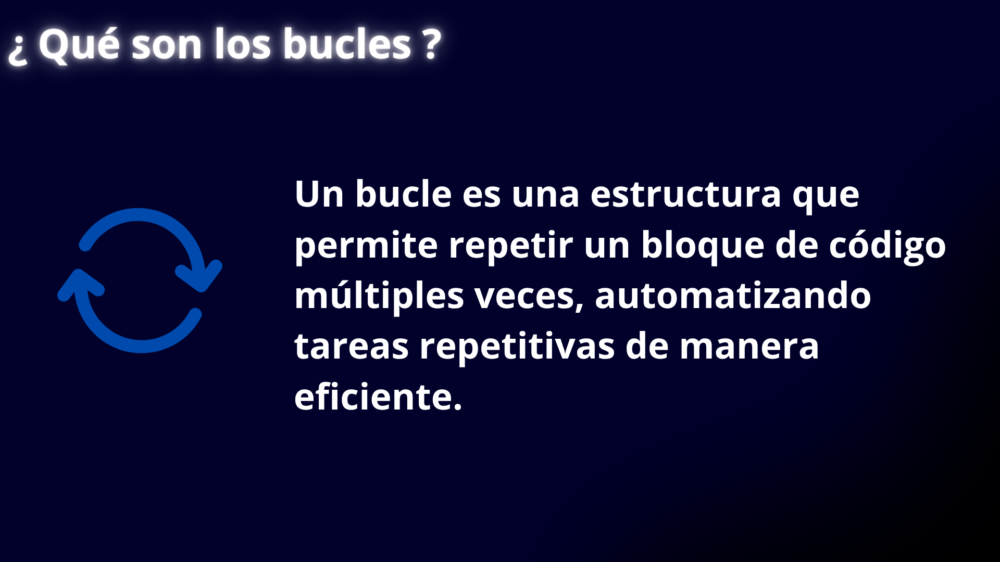
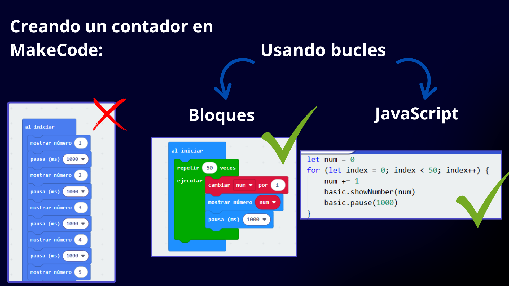

Ya hemos trabajado con variables, condicionales, tipos de datos y operadores relacionales y lógicos.
Ahora debemos aprender sobre los fundamentos de los bucles en programación para reprogramar los Bucle-Bots.

Las estructuras como If (Si) nos permiten controlar el flujo que sigue nuestro programa si se cumple una condición, sin embargo esto no es suficiente para desarrollar programas más complejos.
Imagina que necesitas hacer un programa que muestre los números del 1 al 5. Con lo que sabemos hasta ahora tendríamos que hacer un programa de más de cinco líneas de código, mostrando un número diferente en cada línea.
Piensa Qué pasaría si necesitas hacer un programa que en lugar de contar del 1 al 5 tenga que contar del 1 hasta el 50. Serían más de cincuenta líneas de código, una por cada número. Sería un código completamente insostenible e innecesariamente largo. Para este tipo de casos, al programar usamos bucles o ciclos.

LOS BUCLES, CICLOS O LOOPS MÁS UTILIZADOS (JavaScript y bloques en makecode)
Bucle WHILE (Condición)
Bucle FOR
Bucle WHILE y FOR (MakeCode y javascript)
- Bucle While: En español "Mientras", se usa cuando no sabemos cuántas veces se va a repetir, pero queremos que lo haga mientras se cumpla una condición. Por ejemplo, seguir preguntando algo hasta que el usuario diga "no".
- Bucle For: En español "Para", Es un bucle que repite una acción un número conocido de veces, pero además usa una variable que cambia en cada repetición. Esa variable nos permite saber en qué vuelta estamos y usarla dentro del bloque. Es útil cuando queremos hacer algo varias veces y llevar un "conteo" (como contar del 1 al 10).
- Repeat: O Repetir. Es muy parecido al Bucle For pero más sencillo. Repite una acción una cantidad fija de veces. Es simple y no muestra una variable que cambie. Se usa cuando queremos hacer algo un número exacto de veces, como repetir una animación 5 veces.
- Bucle do...while: Es parecido al while, pero primero se ejecuta una vez y después se fija si debe seguir repitiendo. Es útil cuando queremos que algo se haga al menos una vez aunque la condición no se cumpla después. Esta estructura no existe en el lenguaje Python ni MakeCode.